막혀도 괜찮아요,
다음 수를 알려 드릴게요
Stuck? We'll show you
the technique for the next move
行き詰まっても大丈夫。
次の一手の解き方を教えます
클래식부터 대각선·킬러·온도계·화살표까지 5가지 스도쿠를 5단계 난이도로 즐깁니다. 힌트는 답만 채우지 않고 그 칸에 쓸 풀이 기법을 알려 주고, 다 풀면 내 풀이를 한 수씩 다시 볼 수 있습니다. Five kinds of sudoku — Classic, X-Sudoku, Killer, Thermo and Arrow — at five difficulty levels. Hints don't just fill in a number; they name the technique that solves the cell. When you finish, replay your solve move by move. クラシックから対角線・キラー・温度計・矢印まで、5種類のナンプレを5段階の難易度で遊べます。ヒントは答えを埋めるだけでなく、そのマスに使う解き方を教えてくれます。解き終えたら自分の手順を1手ずつ振り返れます。


무료 · 광고 포함 · 6개 언어 Free · Contains ads · 6 languages 無料・広告あり・6言語
익숙한 스도쿠에 규칙 하나를 더합니다Classic sudoku, plus one extra ruleおなじみのナンプレに、ルールを1つ足すだけ
모든 칸에 1~9를 겹치지 않게 넣는 기본 규칙은 같습니다. 규칙마다 난이도별로 1,000개씩, 모두 답이 하나뿐인 퍼즐이 들어 있습니다.The basic rule never changes: 1–9 once in every row, column and box. Each rule set has 1,000 puzzles per difficulty, every one with a single solution.各行・列・ブロックに1〜9を重ならないように入れる基本ルールは同じです。ルールごと・難易度ごとに1,000問ずつ、すべて答えが1つだけの問題を収録しています。
가로줄·세로줄·3×3 칸에 1~9가 한 번씩.1–9 once in each row, column and 3×3 box.各行・列・3×3ブロックに1〜9を1回ずつ。
두 대각선에도 1~9가 한 번씩 들어갑니다.Both long diagonals must also hold 1–9 once.2本の対角線にも1〜9が1回ずつ入ります。
점선 케이지 안 숫자의 합이 모서리의 작은 숫자와 같고, 케이지 안에서는 숫자가 겹치지 않습니다.Numbers in each dotted cage add up to its small clue, with no repeats inside the cage.点線のケージ内の数字の合計が隅の小さな数字と等しく、ケージ内で数字は重なりません。
온도계를 따라 숫자가 커집니다. 둥근 끝(전구)이 가장 작습니다.Numbers increase along each thermometer, starting smallest at the bulb.温度計に沿って数字が大きくなります。丸い端（球部）が最小です。
화살표가 지나는 칸의 합이 원 안의 숫자와 같습니다.The cells along an arrow add up to the number in its circle.矢印が通るマスの合計が、丸の中の数字と同じになります。
보드, 레슨, 통계, 테마까지Boards, lessons, stats and themes盤面、レッスン、統計、テーマまで
옆으로 넘겨 실제 화면을 보세요.Swipe through the actual screens.横にスクロールして実際の画面をご覧ください。
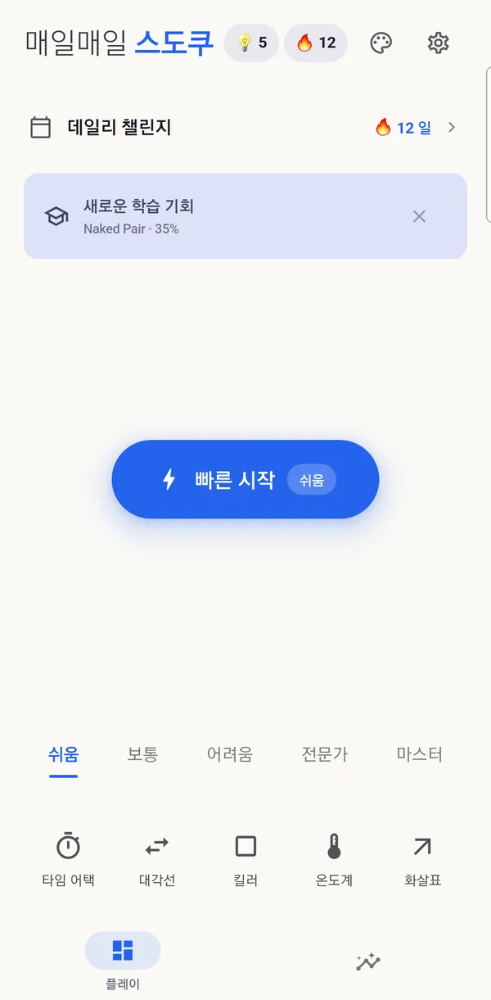
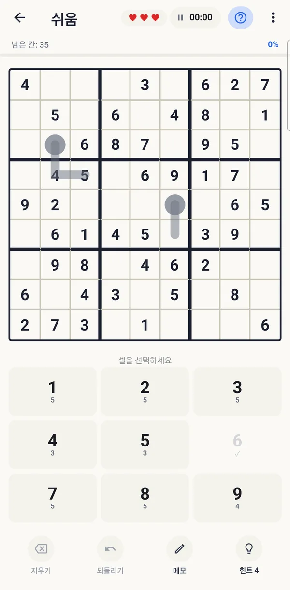
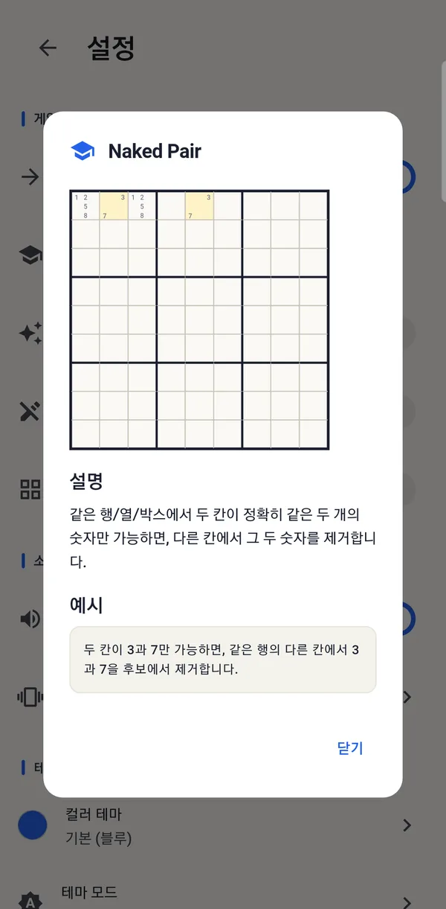
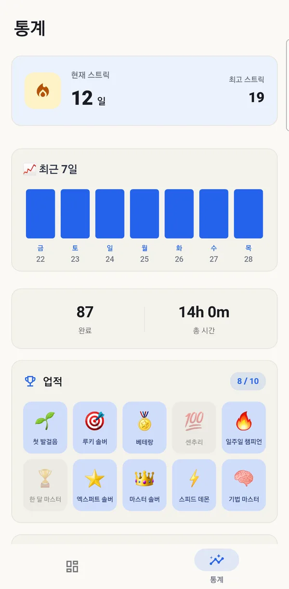
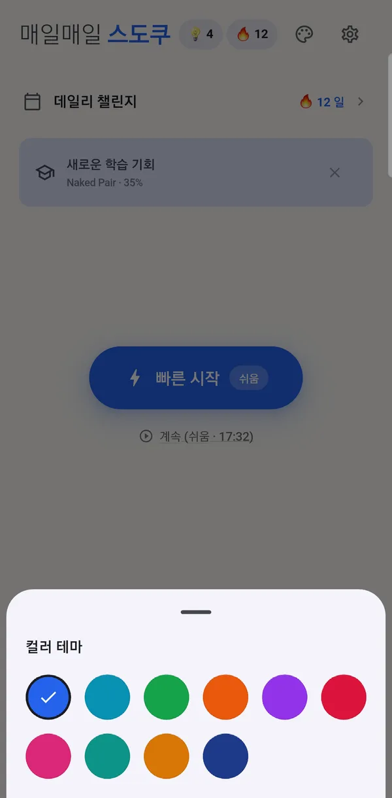
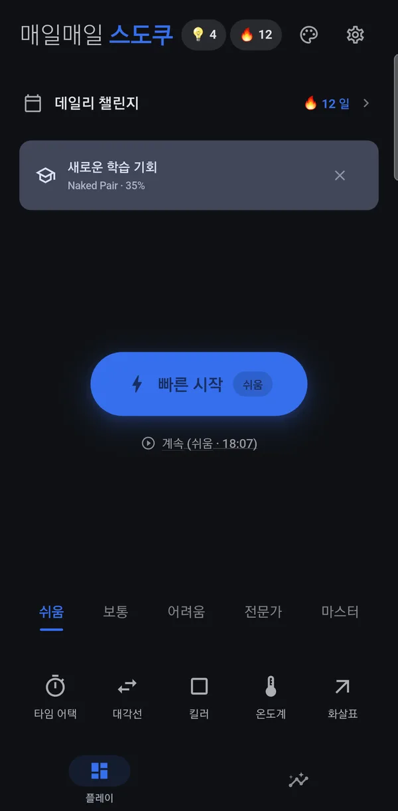
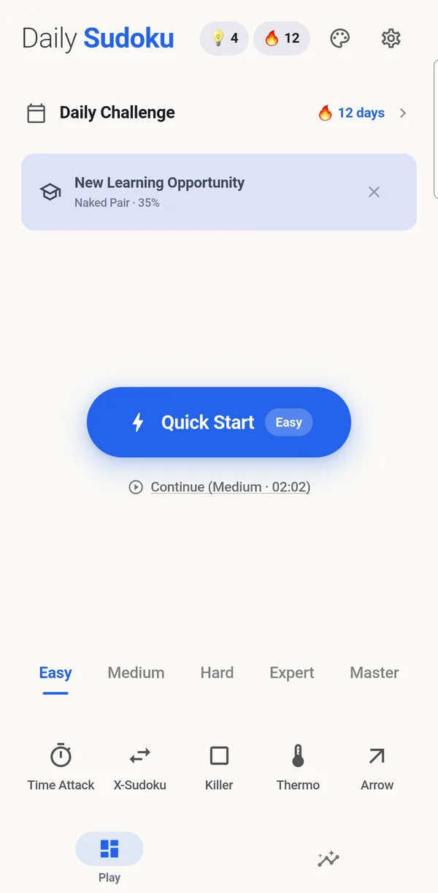
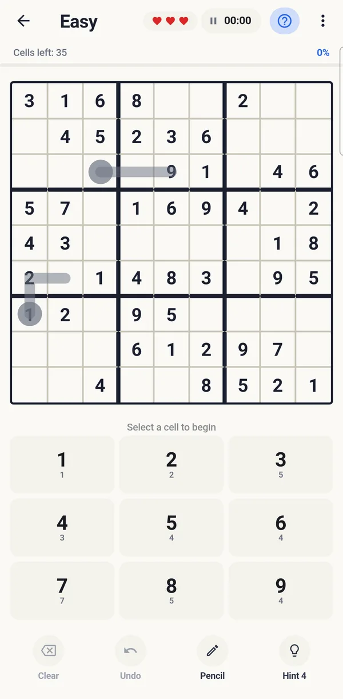
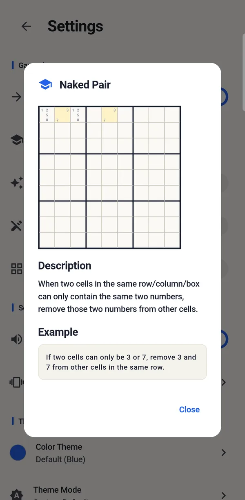
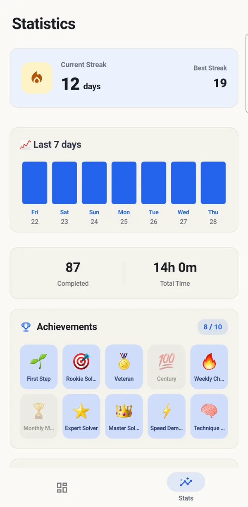
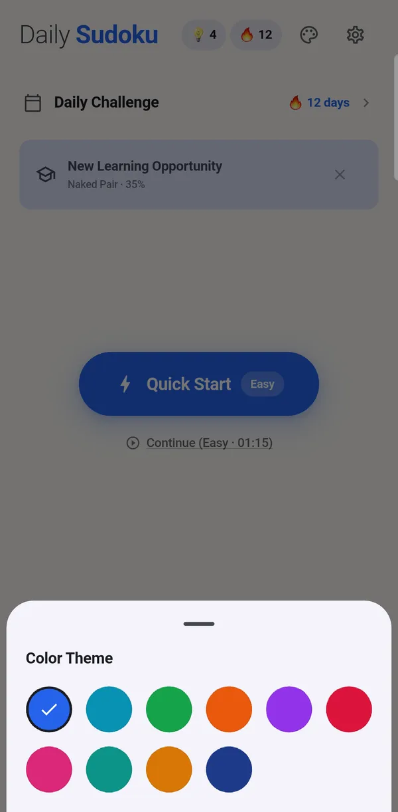
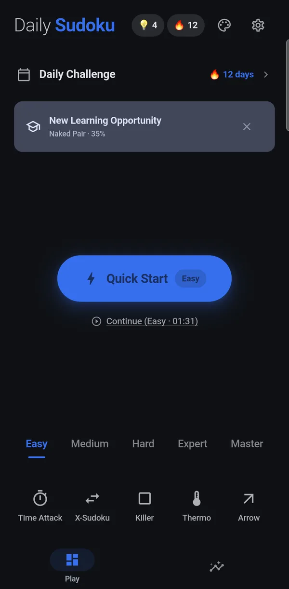
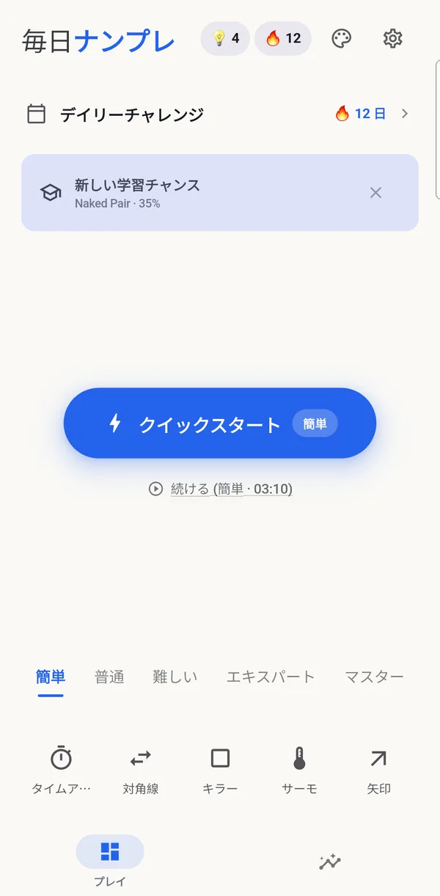
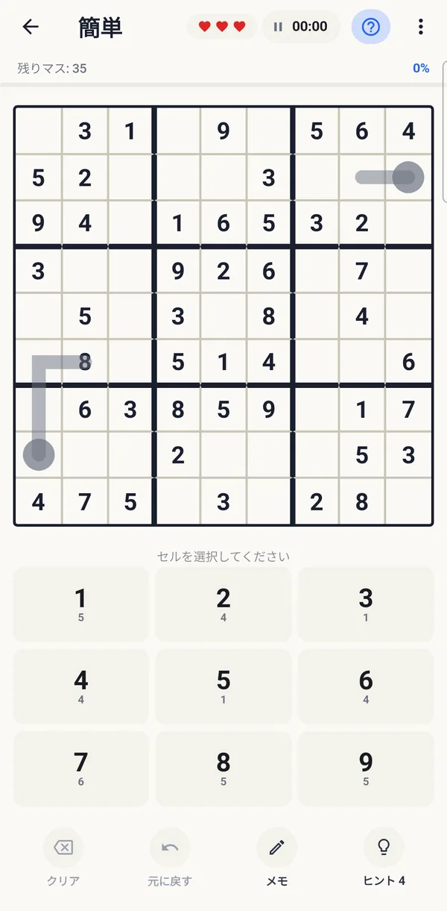
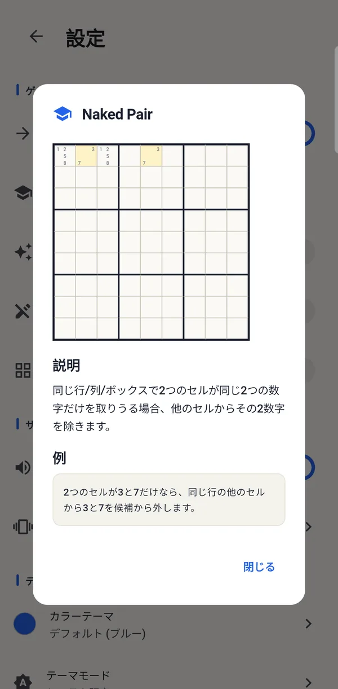
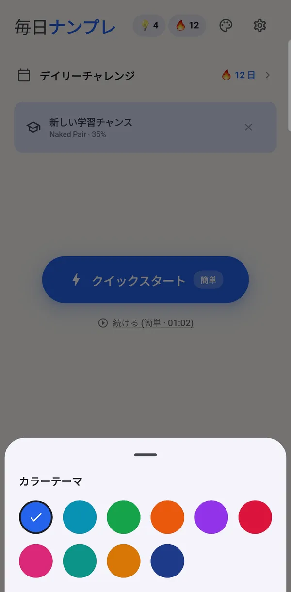
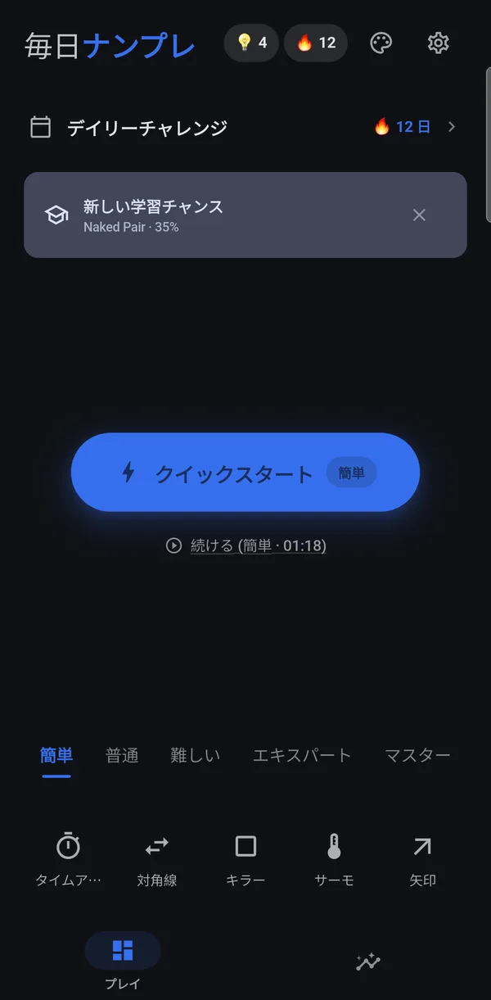
풀면서 실력이 느는 스도쿠Sudoku that makes you better as you play解くほど上達するナンプレ
기법을 알려 주는 힌트Hints that name the technique解き方を教えるヒント
힌트를 쓰면 숫자와 함께 그 칸을 푸는 데 쓴 기법을 보여 줍니다. 힌트는 데일리 챌린지와 업적으로 모읍니다.A hint fills a cell and tells you which technique solves it. You earn hints from the Daily Challenge and achievements.ヒントを使うと、数字と一緒にそのマスを解く解き方を表示します。ヒントはデイリーチャレンジと実績でもらえます。
풀이 기법 레슨 11가지11 technique lessons解き方レッスン11種類
네이키드 싱글부터 X-윙·스워드피시·젤리피시까지, 기법마다 설명과 예시 보드가 있습니다.From Naked Single to X-Wing, Swordfish and Jellyfish — each with an explanation and an example board.ネイキッドシングルからXウイング・ソードフィッシュ・ジェリーフィッシュまで、解き方ごとに説明と例題があります。
풀이 다시 보기Replay your solve手順の振り返り
다 푼 퍼즐을 한 수씩 다시 재생합니다. 오래 걸린 구간과 그때 쓸 수 있었던 기법을 짚어 줍니다.Play back a finished puzzle move by move, with the slow spots marked and the technique you could have used there.解き終えた問題を1手ずつ再生します。時間がかかった場面と、そこで使えた解き方を示します。
약한 기법 찾기Find your weak spots苦手な解き方を発見
힌트를 자주 쓰는 기법을 찾아 홈 화면에서 알려 주고, 통계에서 연습이 필요한 기법을 보여 줍니다.The app spots techniques you often need hints for, flags them on the home screen and lists them in your stats.ヒントをよく使う解き方を見つけてホーム画面で知らせ、統計で練習が必要な解き方を表示します。
데일리 챌린지Daily Challengeデイリーチャレンジ
매일 모든 사람이 같은 퍼즐을 풉니다. 캘린더에 완료한 날이 쌓이고, 완료하면 힌트 3개를 받습니다.Everyone gets the same puzzle each day. Finished days fill your calendar, and each one earns you three hints.毎日、全員が同じ問題を解きます。クリアした日はカレンダーに記録され、クリアするとヒントが3つもらえます。
타임 어택Time Attackタイムアタック
보통 난이도 퍼즐을 5분 안에 풀어 보세요.Solve a Medium puzzle in under five minutes.普通の難易度の問題を5分以内に解きましょう。
메모와 자동 메모Notes and auto-notesメモと自動メモ
칸마다 후보 숫자를 적어 두고, 짧은 광고를 보면 자동 메모로 모든 빈칸의 후보를 한 번에 채울 수 있습니다.Pencil in candidates cell by cell, or watch a short ad to auto-fill every empty cell's candidates at once.マスごとに候補の数字をメモでき、短い広告を見ると自動メモですべての空きマスの候補を一度に埋められます。
통계와 업적Stats and achievements統計と実績
최근 7일 기록, 연속 기록, 완료 수와 총 플레이 시간, 업적 10개를 확인합니다.See the last seven days, your streak, puzzles solved, total play time and 10 achievements.直近7日の記録、連続記録、クリア数と総プレイ時間、10個の実績を確認できます。
컬러 테마 10가지10 color themesカラーテーマ10種類
보드 색을 10가지 중에서 고르고, 라이트·다크 모드를 지원합니다.Pick from 10 board colors, in light or dark mode.盤面の色を10種類から選べ、ライト・ダークモードに対応しています。
자주 묻는 질문Questionsよくある質問
무료인가요?Is it free?無料ですか？
네. 모든 규칙과 난이도, 데일리 챌린지를 무료로 즐길 수 있고 광고로 운영됩니다. 앱 안에서 결제하는 상품은 없습니다. 처음 두 판을 마칠 때까지는 전면 광고가 나오지 않습니다.Yes. Every rule set, difficulty and the Daily Challenge are free and supported by ads; there are no in-app purchases. No full-screen ads appear until you've finished your first two puzzles.はい。すべてのルール・難易度・デイリーチャレンジを無料で遊べ、広告で運営しています。アプリ内課金はありません。最初の2問を解き終えるまで全画面広告は表示されません。
실수하면 어떻게 되나요?What happens when I make a mistake?ミスするとどうなりますか？
하트가 하나 줄어듭니다. 하트 3개를 모두 쓰면 짧은 광고를 보고 이어서 풀 수 있습니다.You lose a heart. If all three are gone, you can watch a short ad to keep going.ハートが1つ減ります。3つすべてなくなったら、短い広告を見て続けられます。
킬러나 온도계 스도쿠는 처음인데요.I've never played Killer or Thermo.キラーや温度計は初めてです。
도움말에 규칙마다 설명이 있습니다. 쉬움 단계부터 시작해 보세요.The help screen explains each rule set. Start with Easy.ヘルプにルールごとの説明があります。「簡単」から始めてみてください。
계정이 필요한가요?Do I need an account?アカウントは必要ですか？
아니요. 회원가입이나 로그인 없이 쓸 수 있습니다. 진행 상황과 통계는 기기에 저장됩니다.No. There's no sign-up or login; your progress and stats are stored on your device.いいえ。会員登録やログインなしで使えます。進み具合と統計は端末に保存されます。
어떤 언어를 지원하나요?Which languages does it support?対応言語は？
한국어, 영어, 일본어, 스페인어, 중국어(간체·번체) 6개 언어를 지원합니다.Six: Korean, English, Japanese, Spanish, and Chinese (Simplified and Traditional).日本語、英語、韓国語、スペイン語、中国語（簡体字・繁体字）の6言語に対応しています。
아이폰에서도 쓸 수 있나요?Is it on iPhone?iPhoneでも使えますか？
네. 구글플레이와 앱스토어 모두에서 받을 수 있고, 아이패드도 지원합니다.Yes. It's on both Google Play and the App Store, and it supports iPad too.はい。Google Play と App Store の両方からダウンロードでき、iPadにも対応しています。
오늘의 퍼즐부터 풀어 보세요Start with today's puzzle今日の1問から始めましょう
무료로 설치하고 데일리 챌린지로 하루를 시작하세요.Free to install. Begin with the Daily Challenge.無料でインストールして、デイリーチャレンジから始めましょう。